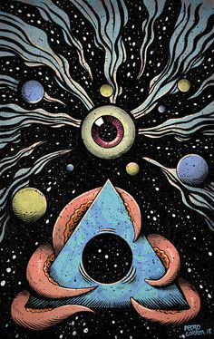
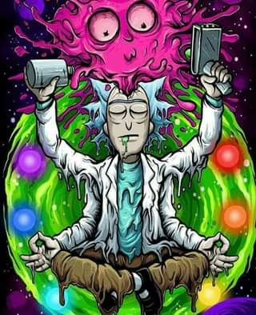
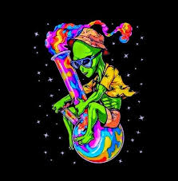

Look the pictures
Os desenhos psicodélicos são alguns dos modelos que melhor apresentam o que o sistema visual humano pode fazer: “enganar” e mostrar algo que não acontece de verdade — como, neste caso acima, ondas que não param de se mexer, mesmo a imagem sendo estática.


